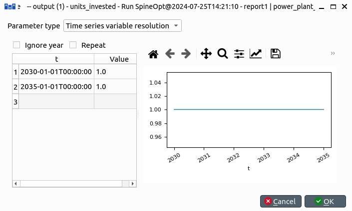
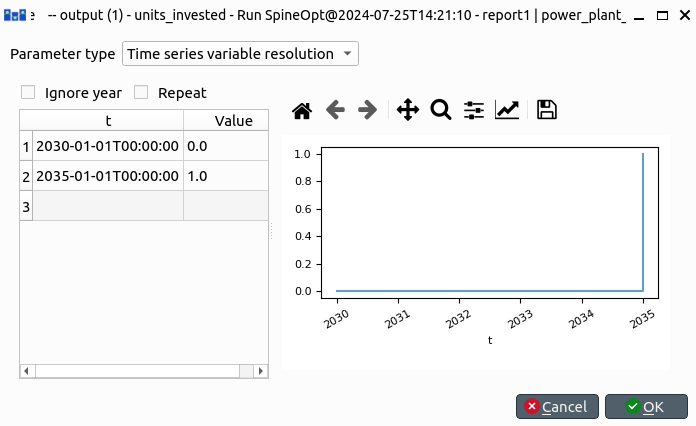
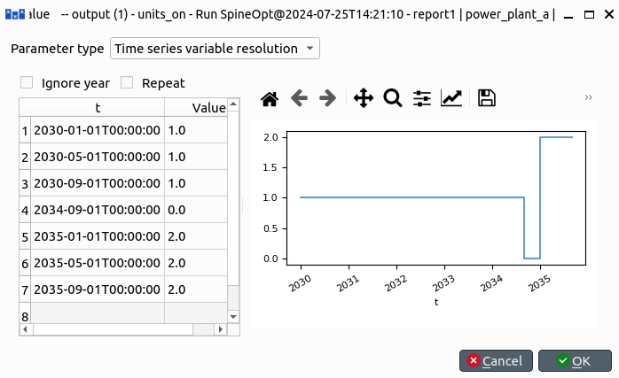
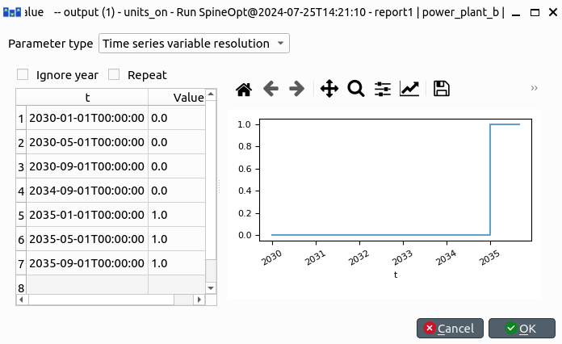

Capacity Planning Tutorial
This tutorial provides a step-by-step guide to include investment constraints for capacity planning in a simple energy system with Spine Toolbox for SpineOpt. There is more information to be found in the documentation on Investment Optimization. To get the most out of this tutorial, we suggest first completing the Simple system tutorial.
Overview
In this tutorial we will:
- start from the simple system tutorial,
- change the temporal structure from one day to seasons of four months (
4M) over the years 2030-2035, - add a temporal block for investments,
- and add investment related parameters for the units.
In the second part, we extend the model to multi-year investments, with investment decisions in both 2030 and 2035.
Starting point
- Create a workflow in Spine Toolbox with an input database, a Run SpineOpt tool and an output database, as on the Verify installation page.
- Double-click the input database to open it in the Spine DB editor.
- Select File > Import... and import the simple system example file.
- Press Commit in the toolbar.
In the steps below, enter all values in the Parameter value table with the alternative Base. For values marked (drop-down), double-click the value cell and pick the value from the drop-down list. For values marked with a type, such as (Duration), right-click the value cell, select Edit... and choose that parameter type.
In the Parameter value table, the first row is a filter row. Enter new values on the empty row below it.
Temporal structure
For the investment optimization, we use a longer time horizon, 2030-2035. To keep the number of time steps small, the operation is modelled in seasons of four months (4M). Investments are decided in a separate temporal block with a resolution of five years (5Y), i.e. once in 2030 and once in 2035.
- In the Entity tree, right-click the temporal_block class and select Add entities...
- Enter the name
investmentand press OK. - Right-click the model__default_investment_temporal_block class, select Add entities..., add
simple | investmentand press OK. - Right-click the model__default_investment_stochastic_structure class, select Add entities..., add
simple | deterministicand press OK. - Enter or change the following values (values marked with * are changed from the simple system):
| group | class | entity byname | parameter name | alternative | value |
|---|---|---|---|---|---|
| model | simple | model_end | Base | 2036-01-01T00:00:00 * (Date time) | |
| model | simple | model_start | Base | 2030-01-01T00:00:00 * (Date time) | |
| temporal_block | flat | resolution | Base | 4M * (Duration) | |
| temporal_block | investment | resolution | Base | 5Y (Duration) |
- Press Commit.
Instead of a default connection to the model, the investment temporal block can also be made specific to a part of the energy system, e.g. with the unit__investment_temporal_block entity.
Unit investment parameters
Next, we make both power plants investment candidates. In the Entity tree, select the unit class and enter the following values:
| group | class | entity byname | parameter name | alternative | value |
|---|---|---|---|---|---|
| unit | power_plant_a | existing_units | Base | 0.0 | |
| unit | power_plant_a | investment_count_initial_cumulative | Base | 0.0 | |
| unit | power_plant_a | investment_count_max_cumulative | Base | 1.0 | |
| unit | power_plant_a | investment_variable_type | Base | integer (drop-down) | |
| unit | power_plant_a | lifetime_economic | Base | 10Y (Duration) | |
| unit | power_plant_a | lifetime_technical | Base | 10Y (Duration) | |
| unit | power_plant_a | unit_investment_cost | Base | 1000.0 | |
| unit | power_plant_a | units_on_cost | Base | 0.0 | |
| unit | power_plant_b | existing_units | Base | 0.0 | |
| unit | power_plant_b | investment_count_initial_cumulative | Base | 0.0 | |
| unit | power_plant_b | investment_count_max_cumulative | Base | 1.0 | |
| unit | power_plant_b | investment_variable_type | Base | integer (drop-down) | |
| unit | power_plant_b | lifetime_economic | Base | 10Y (Duration) | |
| unit | power_plant_b | lifetime_technical | Base | 10Y (Duration) | |
| unit | power_plant_b | unit_investment_cost | Base | 1000.0 | |
| unit | power_plant_b | units_on_cost | Base | 0.0 |
What the values do:
- existing_units 0 and investment_count_initial_cumulative 0: the units do not exist unless the model invests in them.
- investment_count_max_cumulative 1: the model can invest in at most one unit of each power plant.
- investment_variable_type
integer: the investment is a whole number of units. With the defaultlinear, the model would invest in 0.25 units ofpower_plant_b. The unit size comes from capacity_per_unit of the unit__to_node entity: 0.25 × 200 = 50, which is exactly the flow needed frompower_plant_b. - lifetime_technical 10Y: a new unit must exist for at least 10 years after the investment. lifetime_economic is used to adjust the investment cost; here it is equal to the technical lifetime.
- unit_investment_cost 1000: the cost of one new unit.
- units_on_cost 0: being online costs nothing.
Normally, you should use discounted investment costs: the costs in 2030 and 2035 are discounted to the discount year, e.g. with a time-varying cost.
Investments in storages and connections are very similar. Note that storages are modelled as nodes.
Examine output
To see the investments in the results, add them to the report:
- Right-click the report__output class and select Add entities...
- Add
report1 | units_investedandreport1 | units_onand press OK (see also How to manage Output Data). - Press Commit and run the SpineOpt tool.
Expected result for units_invested:
| unit | 2030 | 2035 |
|---|---|---|
| power_plant_a | 1.0 | 0.0 |
| power_plant_b | 1.0 | 0.0 |
Both power plants are needed to cover the demand of 150 (100 + 50), so the model invests in one unit of each in 2030. In 2035, they still exist, so no new investments are needed.
The units_on values of power_plant_b may vary between 0.25 and 1.0. units_on is a continuous variable here and being online costs nothing, so any value large enough to cover the flow gives the same total cost.
Multi-year investments tutorial
Multi-year investments refer to making investment decisions at different points in time, such that a pathway of investments can be modelled. This is useful when long-term scenarios are modelled, but modelling each year is not practical, or when investment decisions are made in different years, which affects the cash flow.
In this part, we consider two investment points: 2030 and 2035. The operation is modelled in seasons of four months, but only in 2030 and 2035. In other words, 2030 and 2035 are milestone years for the pathway 2030-2035. We continue from the model of the first part.
Temporal structure
We replace the flat temporal block with two operation blocks, one for 2030 and one for 2035.
- In the Entity tree, right-click the temporal block
flatand select Remove.... If the old block is left in the model, the temporal structure will be wrong. - Right-click the temporal_block class, select Add entities..., add
operation2030andoperation2035and press OK. - Right-click the model__default_temporal_block class, select Add entities..., add
simple | operation2030andsimple | operation2035and press OK. - Enter the following values:
| group | class | entity byname | parameter name | alternative | value |
|---|---|---|---|---|---|
| temporal_block | investment | resolution | Base | 5Y * | |
| temporal_block | operation2030 | block_end | Base | 2031-01-01T00:00:00 (Date time) | |
| temporal_block | operation2030 | block_start | Base | 2030-01-01T00:00:00 (Date time) | |
| temporal_block | operation2030 | resolution | Base | 4M (Duration) | |
| temporal_block | operation2030 | weight | Base | 5.0 | |
| temporal_block | operation2035 | block_end | Base | 2036-01-01T00:00:00 (Date time) | |
| temporal_block | operation2035 | block_start | Base | 2034-09-01T00:00:00 (Date time) | |
| temporal_block | operation2035 | resolution | Base | 4M (Duration) | |
| temporal_block | operation2035 | weight | Base | 1.0 |
(* already set in the first part)
What the values do:
- block_start and block_end leave a gap between the years 2031 and 2034, which are not modelled.
operation2035starts already in the last season of 2034 (2034-09-01). This extra time slice sets the boundary conditions for the block, see the info box below.- weight 5 for
operation2030: this block represents the operation in 2030-2034, so its operating costs are multiplied by five.operation2035only represents 2035, so its weight is 1. Without weights, the operating costs in the input data would have to cover the whole period.
Discontinuous (or non-consecutive) time slices in SpineOpt need to be initialized in order for SpineOpt to correctly generate constraints. For the first time slice that is done through the initialization parameters as has been done before in the tutorials. For the other time slices, an additional preceding time slice is needed. The boundary conditions for, e.g., initial storage level or online status of units can be set in that preceding time slice.
Note that we do not yet support linking the boundary conditions with the previous operation temporal block. This additional definition means that we will also have results for it, which is redundant and should be ignored when post-processing.
Demand
We assume that the demand grows from 100 in 2030 to 400 in 2035. The demand changes from a constant to a time series:
- Select the node class, right-click the demand value of
electricity_nodeand select Edit... - Choose the parameter type Time series variable resolution and enter:
| t | value |
|---|---|
| 2030-01-01T00:00:00 | 100.0 |
| 2030-05-01T00:00:00 | 100.0 |
| 2030-09-01T00:00:00 | 100.0 |
| 2034-09-01T00:00:00 | 0.0 |
| 2035-01-01T00:00:00 | 400.0 |
| 2035-05-01T00:00:00 | 400.0 |
| 2035-09-01T00:00:00 | 400.0 |
The value 0 at 2034-09-01 is for the extra time slice that sets the boundary conditions of operation2035.
Investment limits
We allow investments in power_plant_a in both 2030 and 2035, and in power_plant_b only in 2035. For that, investment_count_max_cumulative becomes a time series:
- Select the unit class, right-click the investment_count_max_cumulative value of
power_plant_aand select Edit... - Choose the parameter type Time series variable resolution and enter the values below. Do the same for
power_plant_b.
| t | power_plant_a | power_plant_b |
|---|---|---|
| 2030-01-01T00:00:00 | 1.0 | 0.0 |
| 2035-01-01T00:00:00 | 2.0 | 1.0 |
Note that the value is cumulative: it includes the units invested in earlier. For power_plant_a, 2.0 in 2035 means one more unit on top of the one from 2030, not two more.
- Press Commit and run the SpineOpt tool.
Results
Expected result for units_invested:
| unit | 2030 | 2035 |
|---|---|---|
| power_plant_a | 1.0 | 1.0 |
| power_plant_b | 0.0 | 1.0 |
In 2030, one unit of power_plant_a covers the demand of 100. In 2035, the demand of 400 needs a second unit of power_plant_a (2 × 100) and one unit of power_plant_b (200).


The units_on results show one unit of power_plant_a online in 2030 and two in 2035, and one unit of power_plant_b online in 2035. The value 0 at 2034-09-01 is the redundant boundary time slice and can be ignored.


Debugging
The input database at the end of this tutorial is available as the capacity planning example file. You can import it into an empty input database to compare it with your own.